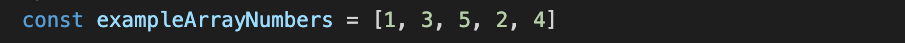
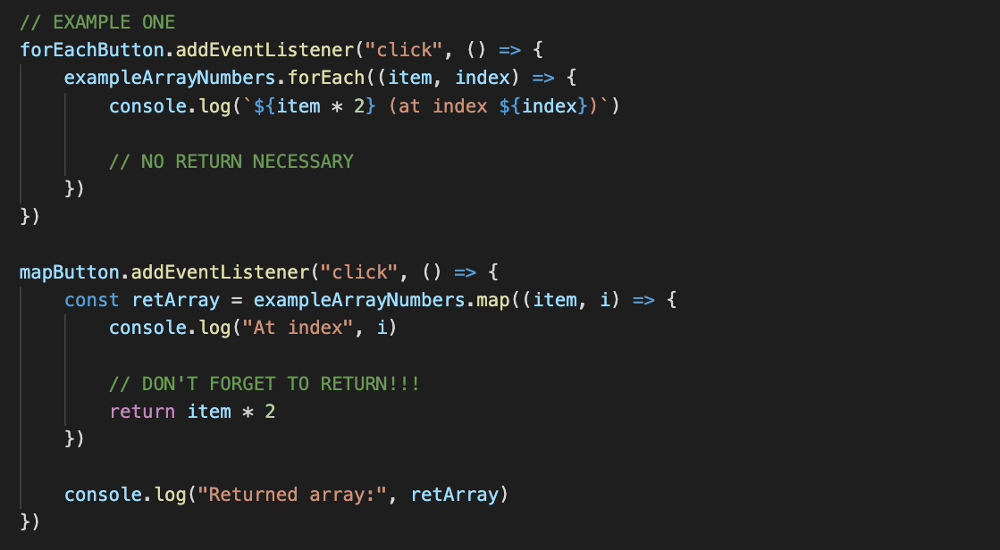
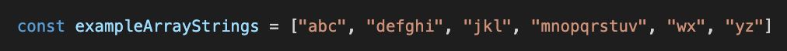
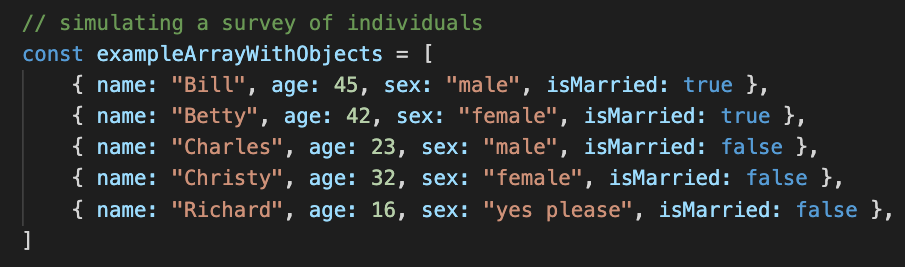
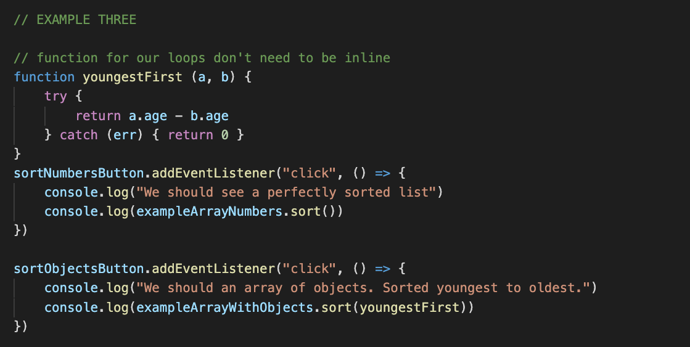
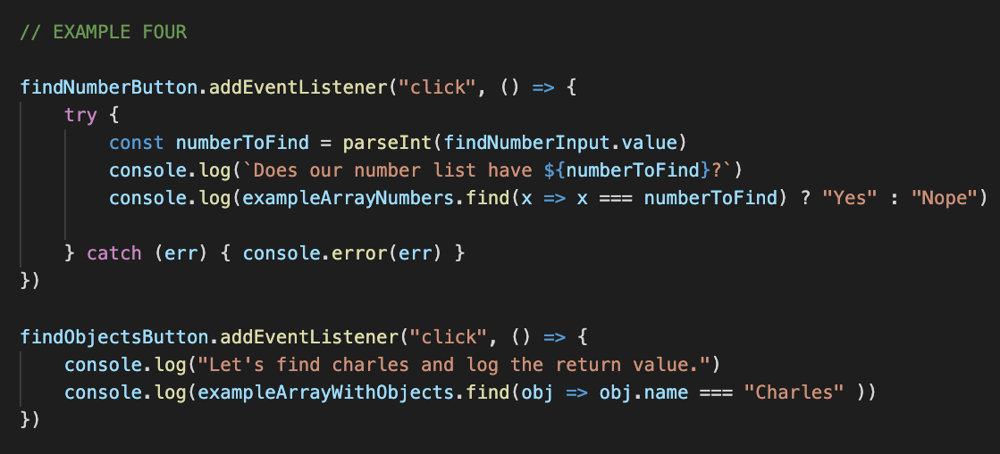
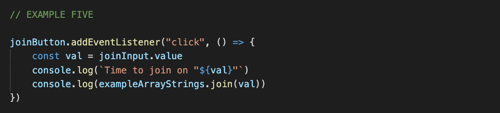
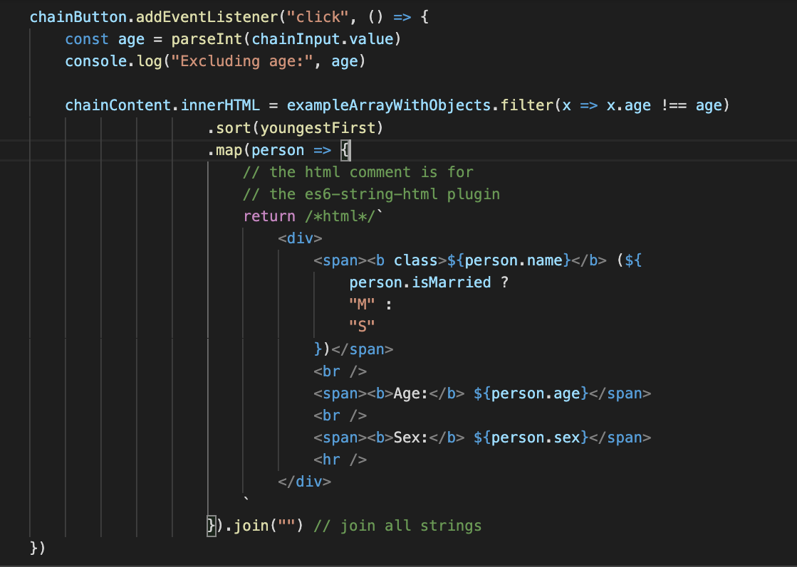

Arrays in Javascript have a ton of built in functionality. Here are a list of my top 5 built-in array loops to use when developing.
Standard map() and forEach()
Both map() and forEach() perform a function for each element in an array
Mapping is used when an array must be returned
The forEach() loop is used when only actions need to be performed
Code Examples:


Filter
Sometimes it's important to show just a portion of the data that we have access too. That's where the filter() method comes in handy.
Returns a new array
Loops through an array, running a given function on every element
If true is returned, the element will be included in the returned array
Code Examples:
Each of the following buttons will filter the various sample arrays and log out a subset of them.


Sort
As with filter(), the sort() method gives us more control over how we use an array.
Returns a new array
Contains all of the same elements
The order of the elements is determined by the function passed to filter
Primitives will be sorted from smallest to largest by default
No function must be passed in this case
About the function passed:
A function should take two arguments (two items to campare)
If a negative is returned, the first item is placed first
Otherwise, the second is placed first
Code Examples:
Let's do some basic sorting. First, we'll look at the default sort on numbers, and then we'll write one to sort the object array.

Find
The find() method is used to identify the first instance of a matching element in an array.
Runs through the array, running the given function with each element as the argument
If a true value is returned, the element is then returned by find()
May be used to check for a match in an array, or to retrieve the value to be used
Code Examples:
Now let's put things into action. First, we'll identify whether a given number can be found in our list, and then, we'll retrieve a member from the objects list.

Join
Our final method join() is used to merge array elements together as one string.
Converts array elements to strings and joins them all together
By default, elements are separated by a ","
String argument may be passed to set the delimiter
Code Examples:
Let's play around with our string array a bit.

Chaining Our Methods
These methods are returning arrays
With the exception of forEach() and join()
We can chain these looping methods together for brevity
Each outward method will work off of the array from the previous one
someArray.sort(funcA).map(funcB).filter(funcC)
Code Examples:
For this final example, we will chain together four methods and append the result to a div tag.
Filter out individuals of the chosen age
Sort by age
Map through and return an array of html strings to render
Join the strings

Final thoughts
Array looping methods are a quick way to step up your JS game